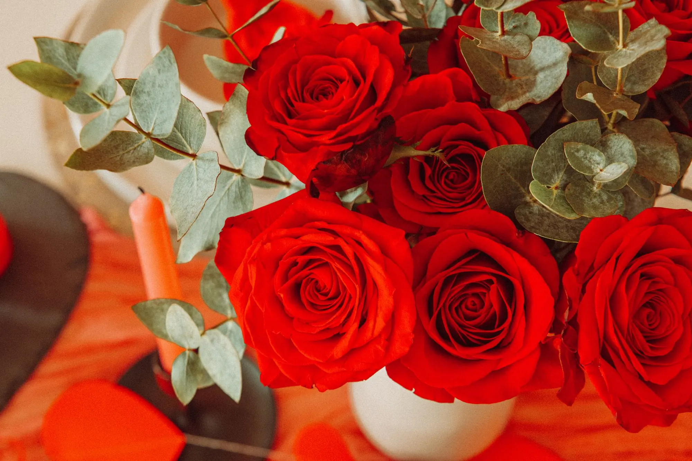
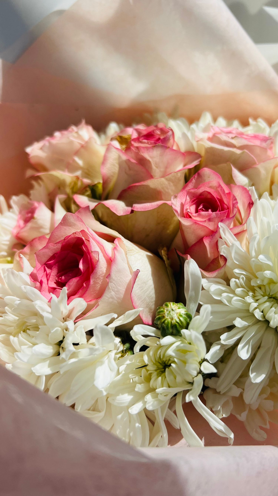

Para decir algo
Un gesto que admite muchas interpretaciones.
Las rosas tienen una forma directa de decir algo importante. Si tienes un gesto en mente, pregunta qué opciones hay disponibles.

Imagen de bancoUna rosa puede hablar por sí sola y también formar parte de un ramo con más matices. Cuéntanos a quién va dirigida tu idea; los colores y formatos concretos se consultan con la floristería.
Cada rosa tiene su propia manera de emocionar.
Un gesto que admite muchas interpretaciones.
Puedes consultar tonos y formas de presentación.
Confirma qué rosas hay disponibles actualmente.


Detrás del símbolo más conocido hay siglos de cultivo y una diversidad sorprendente.
Las rosas se cultivan desde hace miles de años. Kew documenta cientos de especies y miles de variedades cultivadas: de flor sencilla o muy llena, perfumadas o sutiles, en tonos que van del blanco al rojo profundo. Por eso hablar de «rosas» no es hablar de una única flor; consulta colores y variedades disponibles.
Usa un jarrón limpio y agua. Retira cualquier hoja que quede por debajo del nivel del agua.
Cada dos o cuatro días cambia el agua y recorta un poco los tallos. Si hay alimento floral, úsalo según indicaciones.
Mantén el ramo en la zona más fresca de casa que resulte adecuada, fuera de sol directo y radiadores.
Retírala para cuidar el conjunto y revisa agua y tallos. Una flor dañada puede acelerar el deterioro visual del ramo.
Pregunta por la composición completa del ramo: el follaje u otras flores acompañantes pueden requerir precauciones diferentes.
Una rosa cortada no lleva tierra. Un rosal en maceta sí: necesita sustrato, sol y atención a las raíces.
Jarrón limpio, hojas fuera del agua, alimento floral si se aporta y renovación del agua y del corte de los tallos cada dos o cuatro días.
Elige un lugar fresco, sin radiadores ni sol directo. Retira flores marchitas para mantener limpia la composición.
No. Para recipiente, pregunta por rosales de patio o miniatura. Una planta grande necesitaría mayor profundidad y espacio.
En una maceta profunda con drenaje, la RHS recomienda sustrato sin turba para plantas establecidas. Evita que el recipiente se seque por completo.
Un rosal vivo agradece varias horas de sol. No se aplica esta regla a un ramo cortado: el sol acorta su frescura visual.
Una rosa preservada no se pone en agua ni en tierra. Consulta la página de cúpulas si buscas un regalo decorativo duradero.
La flor o planta cambia un espacio cuando su tamaño, luz y función se tienen en cuenta.
Un jarrón sencillo permite que la rosa sea la protagonista.
Mejor bajo y sin perfume excesivo si habrá comida y conversación.
Una maceta profunda y un lugar soleado pueden funcionar para variedades aptas.
Si es preservada, evita baño húmedo y sol directo.
Escríbenos con tu idea para consultar disponibilidad y detalles. Las fotografías son de inspiración y no representan productos disponibles en tienda.